快適性・使用性
スライドドア
スライドドア
●
左側ドアにスライドドアを採用し，乗降性および利便性に優れたものとしました。
●
スライドドアに，首振り式ロワーローラーブラケットを採用しました。また，すべてのローラーを樹脂巻きとしてスライドドア開閉時の転動音の抑制をはかりました。
●
スライドドアに中間ストッパーを設定し，スライドドアサッシュとクォーターピラー間での首や手などの挟み込み防止をはかりました。
●
スライドドアの全開ストッパーに，保持力に優れたロック式を採用しました。
●
スライドドアに，フューエルリッドとスライドドアの干渉を防止するフューエルリッドインターロック機構を設定しました。
●
スライドドア内に“スライドドア常時給電ユニット”を設定し，ドアが開いている状態でもドア内の各機器へ給電可能な構造としました。
●
スライドドアに両振り式ドアインサイドハンドルを採用し，スライドドア閉時のロックASSY解除と開時の全開ストッパー解除を一つの操作ハンドルで行えるものとしました。
●
スライドドアを軽い力で確実に閉じられる「スライドドアイージークローザー」を全車に設定しました。（参照先 スライドドアイージークローザーシステム
）
●
ドアハンドル・コントロールスイッチ・トランスミッターを操作することにより，スライドドアを自動的に開閉する「パワースライドドア」を，全車に設定しました。（参照先 パワースライドドアシステム
）
コンビネーションメーター
コンビネーションメーター
●
VSCの採用に伴い，TRC ＆ VSC搭載車（メーカーオプション設定）のコンビネーションメーター内に，VSCウォーニング・スリップ・TRC OFFの各インジケーターランプを設定しました。
●
コンビネーションメーターには，文字盤や指針が自発光するオプティトロンメーターを全車に採用しました。
●
各メーター類の指針駆動用ムーブメントにステッパーモーターを採用しました。
●
LCD（液晶ディスプレイ）で表示する電子式のオド/トリップメーターを採用しました。
●
レオスタットを採用し，メーター輝度の切り替えを可能としました。
●
車速信号は，ABS用の車輪速センサーからの信号を，スキッドコントロールコンピューターを介して入力するものとしました。
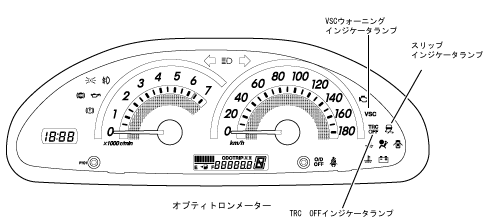
スピードメーター仕様
スピードメーター仕様
表 示
機 能
表示範囲：0～180km/h
10km/h刻み
ステッパーモーター方式。
ABS用車輪速センサーからの矩形波パルス信号を，スキッドコントロールコンピューターを介して入力し，車速を表示。
タコメーター仕様
タコメーター仕様
表 示
機 能
表示範囲：0～7000r/min
500r/min刻み
レッドゾーン：6400～7000r/min
ステッパーモーター方式。
エンジンコントロールコンピューターからの矩形波パルス信号（2パルス/rev）を入力し，エンジン回転数を表示。
フューエルゲージ仕様
フューエルゲージ仕様
表 示
機 能
表示範囲：E～F
フューエル残量約6.8L以下になると，ウォーニング表示
デジタル電子遅延方式。
フューエルセンダーゲージからのフューエルタンク内残量信号とスキッドコントロールコンピューターからの車速信号とを入力し，車両状態に応じた演算処理を行ったデータによりフューエル残量を表示。
オド/トリップメーター仕様
オド/トリップメーター仕様
表 示
機 能
LCDによるデジタル表示
オドメーター表示範囲：0～999999km（1km刻み）
トリップメーターA・B表示範囲：0.0～9999.9km（0.1km刻み）
電子式。
ABS用車輪速センサーからの矩形波パルス信号を，スキッドコントロールコンピューターを介して入力し，積算することで走行距離を表示。
交代距離も加算。
オド/トリップ切り替えスイッチにより，オドメーター→トリップメーターA→トリップメーターB→レオスタットの順に表示。
マルチブザー仕様
マルチブザー仕様
項 目
機 能
キー抜き忘れウォーニング
イグニッションキーが差し込んである状態（IG・ACC OFF）で，運転席のドアを開くと約0.5秒周期で吹鳴。
ランプ消し忘れウォーニング
ヘッドランプまたはテールランプが点灯した状態でイグニッションキーが抜いてある場合に，運転席のドアを開くと連続音で吹鳴。
A/Tリバースウォーニング
シフトポジション「R」（リバース）時に，約0.7秒周期で吹鳴。
シートベルト非着用ウォーニング
シートベルトを装着していない状態で一定速度以上の走行を行うと，2段階のパターンで吹鳴。
作動/ウォーニングインジケーターランプ仕様
作動/ウォーニングインジケーターランプ一覧
No.
意 匠
名称と表示
機 能
1
ハイビーム作動
LEDによりブルーで表示
ハイビームヘッドランプ点灯時にディマスイッチに連動して点灯。
2
ターンシグナル作動
LEDによりグリーンで表示
ターンシグナルランプ点灯時に，フラッシャーリレーと同期して点灯。
3
テールランプ作動
LEDにより黄緑で表示
テールランプ点灯時にテールランプリレーがONすることにより点灯。
4
半ドアウォーニング
LEDによりレッドで表示
いずれかのドアが開いている場合または半ドア状態の場合に各ドアカーテシランプスイッチがONすることで点灯。
5
パーキングブレーキ作動/ブレーキ液レベルウォーニング/EBDウォーニング
LEDによりレッドで表示
パーキングブレーキ作動中にパーキングブレーキスイッチがONすることにより点灯。
ブレーキ液が少ない（LOWレベル以下）場合にブレーキ液レベルスイッチがONすることにより点灯。
ブレーキシステムに異常が発生した場合にスキッドコントロールコンピューターの制御により点灯。
6
チャージウォーニング
LEDによりレッドで表示
オルタネーターの端子電圧に異常が発生した場合に点灯。
7
オイルプレッシャーウォーニング
LEDによりレッドで表示
油圧が極端に低下した場合にオイルプレッシャースイッチがONすることにより点灯。
8
O/D OFF作動
LEDによりイエローで表示
O/D OFF選択時に，エンジンコントロールコンピューターの制御により点灯。
9
チェックエンジンウォーニング
LEDによりイエローで表示
エンジンコントロールコンピューターなどのエンジン制御システム関係に異常が発生した場合にエンジンコントロールコンピューターの制御により点灯。
10
ABSウォーニング
LEDによりイエローで表示
ABS関係に異常が発生した場合にスキッドコントロールコンピューターの制御により点灯。
11
運転席シートベルト非着用ウォーニング
LEDによりレッドで点滅表示
イグニッションスイッチ ON状態で，運転席のシートベルトを着用していない場合にメーターコンピューターの制御により点滅。
12
SRSエアバッグウォーニング
LEDによりレッドで表示
SRSエアバッグ関係に異常が発生した場合にセンターエアバッグセンサーASSYの制御により点灯。
13
低水温
LEDによりブルーで表示
エンジン冷却液温が約55℃以上（液温上昇時）になるまで，エンジンコントロールコンピューターからの水温信号を入力したメーターコンピューターの制御により点灯。
14
高水温
LEDによりレッドで表示
エンジン冷却液温が異常高温になった場合に，エンジンコントロールコンピューターからの水温信号を入力したメーターコンピューターの制御により点滅（117℃以上）または点灯（120℃以上）。
15
フロントフォグランプ作動
LEDによりグリーンで表示
フロントフォグランプ点灯時にフロントフォグランプリレーがONすることにより点灯。
16.
スリップ
LEDによりイエローで表示
VSC作動時にスキッドコントロールコンピュータの制御により点滅
17.
TRC OFF作動
LEDによりイエローで表示
TRC OFF時にエンジンコントロールコンピュータの制御により点灯
18.
VSCウォーニング
LEDによりイエローで表示
VSC関係に異常が発生した場合にスキッドコントロールコンピューターの制御により点灯
オーディオ ＆ ビジュアル概要
オーディオ ＆ ビジュアル概要
●
機能性とデザイン性に優れたオーディオ ＆ ビジュアルシステムを装備し，居心地のよい室内空間を演出しました。
●
オーディオシステムとして，専用フェイスの「異形サイズ CD一体型AM/FMチューナー」と4スピーカーシステムを組み合わせました。
●
ビジュアルシステムとして，03年度仕様の“ワイドマルチ AV ステーション”を採用し，4スピーカーシステムと組み合わせました。
オーディオ ＆ ビジュアルシステム概要図
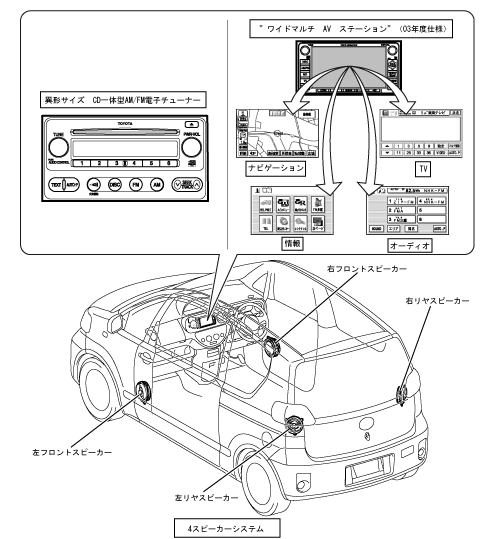
“ワイドマルチ AV ステーション”システム概要
“ワイドマルチ AV ステーション”システム概要
●
視認性に優れた6.5型ワイド画面のディスプレイにナビゲーション・TV・オーディオなどの画面を切り替えて表示するとともに，それらの操作を行うことのできる“ワイドマルチ AV ステーション”（03年度仕様）を採用し，全車にメーカーオプション設定しました。
●
03年度仕様“ワイドマルチ AV ステーション”は，販売店装着オプション設定のハンズフリーシステムに接続したお客様の携帯電話などでネットワークと連携し，「ヘルプネット」・「Ｇ－ＢＯＯＫ」といったオンラインサービスの利用およびハンズフリー通話を行うことができます。また，従来より採用のナビゲーション・情報モードなどにも機能の追加や変更を施すことで，より利便性の高いオーディオ ＆ ビジュアルシステムとしました。
●
操作パネルの意匠は，統一感のあるスイッチ配置やスイッチのショートストローク化などにより，すっきりとした高精度感あふれるデザインとしました。なお，サイズは従来と同様，トヨタ新汎用サイズ（幅：200mm×高さ：100mm）としました。
●
各操作画面のデザインやナビゲーションでの地図画面表示を一新し，見栄えを向上しました。
●
音声操作機能を採用することにより，販売店装着オプション設定の音声認識システムを用いて，音声コマンドによる操作が行えるものとしました。
●
用品設定の3メディアVICS対応機器（ビーコンユニット）を装着することにより，電波・光ビーコンからのVICS情報を受信してナビゲーションモード画面上にVICS道路交通情報が表示できるものとしました。
“ワイドマルチ AV ステーション”システム構成
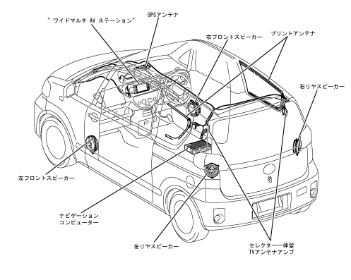
ハンズフリー通話機能
ハンズフリー通話機能
●
お客様の携帯電話をハンズフリーシステムを用いて“ワイドマルチ AV ステーション”に接続することで，携帯電話を直接操作することなく，電話機能を使うことができます。
参 考
携帯電話は指定された機種のみが使用できます。
●
発信後または着信後は，音声認識マイクと車両搭載スピーカーによって通話を行います。
発信
・
停車中に電話スイッチのオフフックスイッチを押す，またはパネルスイッチの「情報・Ｇ」スイッチを押すことで表示される情報モード画面内の「TEL」をタッチすると，電話番号入力画面に移行し，以下の方法で電話をかけることができます。
発信画面
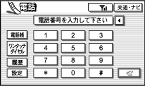
ダイヤル発信の方法
項 目
方 法
ダイヤル発信
電話番号を入力して電話をかける。
電話帳発信
電話帳から電話番号を呼び出して電話をかける。
ワンタッチダイヤル発信
あらかじめ登録しておいた電話番号（ワンタッチダイヤル）を選択して電話をかける。
履歴発信
過去に電話をかけた番号または，過去に電話を受けた番号を呼び出して電話をかける。
・
上記の基本発信機能のほか，ナビゲーション画面からの発信（電話番号データを持っているとき），音声認識による発信を可能とし，様々な場面での発信に対応しています。
着信
・
着信すると着信音を鳴らすとともに，着信中画面を表示します。なお，着信音を出力するときは，オーディオ音声・ナビゲーションの案内音声をミュート（消音）します。
・
着信中画面上の「通話（電話マーク）」をタッチする，または電話スイッチのオフフックスイッチを押すことで，電話を受けることができます。
ハンズフリー通話機能設定
・
電話番号入力画面の「設定」にタッチすることで，電話設定画面に切り替わり，ハンズフリーに関する各種の設定ができます。
電話設定画面
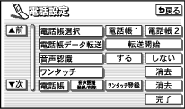
電話設定項目一覧
電話帳選択
電話帳の消去
電話帳データ転送
発信履歴のワンタッチ登録
音声認識
発信履歴の消去
ワンタッチの消去
着信履歴のワンタッチ登録
電話帳音声認識登録/削除
着信履歴の消去
電話帳のワンタッチ登録
電話帳データの転送・登録
・
携帯電話自体のメモリをハンズフリーシステム側の電話帳に転送し，登録することができます。
・
各情報の転送・登録は，電話設定画面から行います。
ヘルプネットシステム概要
ヘルプネットシステム概要
●
お客様の携帯電話を，販売店装着オプション設定のハンズフリーシステムで“ワイドマルチ AV ステーション”に接続することにより，緊急通報システム「ヘルプネット」を利用することができます。
参 考
携帯電話は指定された機種のみが使用できます。
●
ヘルプネットシステムは，運転時におけるトラブル発生時にハンズフリーシステムから公衆回線網を用いてヘルプネットオペレーションセンターに通報することにより，ヘルプネットオペレーションセンターは救援機関（消防署・警察署）に対して救急救助活動に必要な情報を迅速かつ的確に伝達し，交通事故死傷者の低減および交通に関わる二次災害の防止をはかるものです。
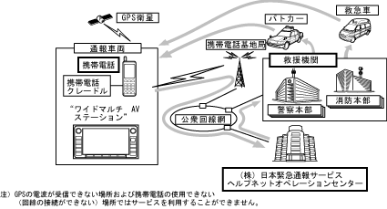
初めて使う場合の準備
・
初めてヘルプネットシステムを利用する際には，あらかじめ（株）日本緊急通報サービスへの会員登録が必要となります。会員登録申し込み後に返送されてくる会員登録通知を受領した後，手動保守点検を2回行うことにより，ヘルプネットシステムによる緊急通報サービスが受けられるようになります。
・
ヘルプネットオペレーションセンターとの通信テスト・ヘルプネットオペレーションセンターに会員登録されているかどうかの確認およびシステムの機器点検を手動で行うこと（手動保守点検）ができます。
手動保守点検の手順一覧
順 序
内 容
1
ナビゲーション画面で，GPSの受信を確認し，パネルスイッチの「情報・Ｇ」スイッチを押した後，情報モード画面内の「設定」をタッチします。
2
設定画面内の「保守点検」を長くタッチし続けます。
3
ヘルプネットオペレーションセンターに接続を開始します。
4
ヘルプネットオペレーションセンターに接続されると，最初に車両の現在位置，手動保守点検であることやヘルプネットオペレーションセンターに会員登録されているか否かをデータ通信により確認します。
5
データ通信の完了後通話モードになり，会員登録済みであればマイクを通してヘルプネットオペレーションセンターと通話することができます。
6
会話の終了によりすべての点検が終了すると，最新のシステム状態を表示します。その後，現在地表示画面が表示されます。なお，場合により再度，手動保守点検を実施する必要があります。
緊急通報機能
通報の手段
・
パネルスイッチの「情報・Ｇ」スイッチを押し，表示される情報モード画面内の「HELPNET」をタッチすることで通報を行います。
緊急通報の手順概要一覧
順 序
システムの状態（「」内はアナウンス音声）
お客様の状態
ヘルプネットオペレーションセンター/救援機関
1
緊急通報可能状態
通報開始
－
2
ヘルプネットオペレーションセンター呼び出し中「緊急通報を開始しました。ヘルプネットに接続しています。」
－
－
3
通報データ送信中「データ送信中です。しばらくお待ちください。」
緊急通報発生および車両位置などのデータをヘルプネットオペレーションセンターに送信
お客様からのデータを受信
4
「ヘルプネットのオペレーターと会話を開始します。」の後，ヘルプネットオペレーションセンターのオペレーターと会話
ヘルプネットオペレーションセンターのオペレーターに状況を報告
オペレーターが状況を確認
5
緊急通報完了「緊急通報を終了しました。ヘルプネットからの連絡待ちを開始します。」
－
オペレーターが救援機関に対して出動要請を行う
6
自動着信待ち状態（約10分間）
待機
救援機関出動
7
－
－
救援機関が通報現場に到着し，救護
緊急通報機能が利用できない場合（一例）
・
ヘルプネットシステム契約の不成立時または消滅時，入会後および契約内容変更時の手動保守点検未実施時。
・
ヘルプネット対応機器または車両関連機器の異常による通信不能時。
・
ヘルプネットオペレーションセンターシステムの位置標定エラー時。
・
ヘルプネットオペレーションセンターシステムの異常による通信不能時。
・
緊急通報システムで利用する通信網に起因する通信不能時。
・
緊急通報事業者の都合によるサービス提供の中断または休止時。
ヘルプネットシステム取り扱い上の注意
・
電波状態によっては緊急通報および通話することができません。
・
携帯電話サービスエリア外では，緊急通報動作が開始しても緊急通報できません。緊急通報できなかった場合には，最寄りの公衆電話などから通報してください。
・
車両衝突時，通信に必要な機器に異常または損傷が生じた場合は，緊急通報および通話ができないことがあります。
・
バッテリーの電圧低下または，バッテリーとの接続が断たれた場合には緊急通報できない場合があります。
・
緊急通報後に救援を待つ間は，安全かつセンターとの会話が可能で安全な場所に避難してください。
・
ボタン操作による緊急通報は安全な場所に停車して行ってください。
・
すべての通信料金は，お客様の負担となります。
・
一部の電話機能（ダイヤルロック等）は緊急通報の妨げとなりますので利用しないでください。なお，使用している電話機または通信事業者によって緊急通報の妨げとなる機能が異なります。
Ｇ－ＢＯＯＫシステム概要
Ｇ－ＢＯＯＫシステム概要
●
販売店装着オプション設定のハンズフリーシステムによりお客様の携帯電話を接続する，またはデータ通信モジュールを接続することで，Ｇ－ＢＯＯＫネットワークと最新技術の融合によるトヨタのトータルモビリティーサービス「Ｇ－ＢＯＯＫ」の利用が可能となり，新しいカーライフを創出するものとしました。
●
「Ｇ－ＢＯＯＫ」は，“育てる”の概念を取り入れ，情報（コンテンツ）などの入手・追加により，機能をお客様独自にカスタマイズできるものとしました。
Ｇ－ＢＯＯＫシステム構成
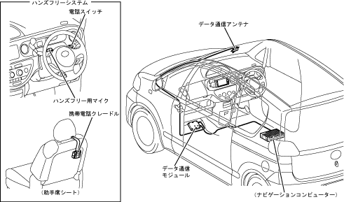
Ｇ－ＢＯＯＫシステム概念図
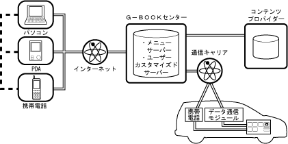
Ｇ－ＢＯＯＫが提供する主なサービス
項 目
代表例
ライブナビゲーション
タウン情報・グルメ情報など。
インフォメーション
ニュース・交通情報など。
エンターテイメント
占い・音楽のヒットランキングなど。
コミュニケーション
Eメール・位置情報交換など。
セーフティ ＆ セキュリティ
車両メンテナンスの案内・自車位置確認など。
Eコマース
オンラインショッピングなど。
参 考
Ｇ－ＢＯＯＫオンラインサービスを利用するには，利用契約や各種登録などが必要になります。また，サービスによっては個別で料金が必要なものがあります。
Ｇ-ＢＯＯＫシステムの特長
カスタマイズに対応
・
情報（コンテンツ）などの追加が可能です。これにより，Ｇ－ＢＯＯＫの機能をお客様の好みや用途に応じてカスタマイズすることができます。
リアルタイムな情報入手
・
ハンズフリーシステムで接続したお客様の携帯電話または，データの無線高速通信を可能とする「データ通信モジュール」により通信を行うことで，ニュースや交通情報などを入手することができます。
音声読み上げ
・
運転中の安全を考慮し，テキストデータを音声で読み上げることができます。これにより，車両のスピーカーを通してニュースやメールなどをチェックすることができます。
車両での情報（コンテンツ）入手について
・
車両でのＧ－ＢＯＯＫの情報（コンテンツ）は，Ｇ－ＢＯＯＫセンターを中心としたＧ－ＢＯＯＫネットワークから携帯電話またはデータ通信モジュールを利用してデータ通信を行うことで入手します。
・
Ｇ－ＢＯＯＫオンラインサービスは，接続する通信機器（携帯電話またはデータ通信モジュール）によって利用できる内容が異なります。
車両でのコンテンツ入手イメージ図
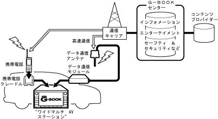
Ｇ-ＢＯＯＫ各種設定について
・
Ｇ－ＢＯＯＫサービスを利用するために，接続した通信機器（携帯電話またはデータ通信モジュール）に合わせた各種設定が必要になります。
・
Ｇ－ＢＯＯＫサービス利用にあたっての各種設定は，設定画面の「Ｇ－ＢＯＯＫ通信設定」をタッチすることで表示されるＧ－ＢＯＯＫ通信設定画面から行います。
Ｇ－ＢＯＯＫ設定画面
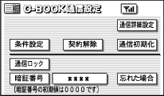
ブラウザについて
・
ブラウザは，Ｇ－ＢＯＯＫ．ｃｏｍが提供する各種コンテンツを表示するアプリケーションです。
・
ブラウザ画面では，表示ページ切り替え・ブックマーク登録・コンテンツの読み上げ要求などの操作ができます。またコンテンツ読み上げ時には，読み上げ音量の調整・停止などの操作ができます。
ブラウザ画面
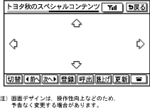
メインメニュー
・
Ｇ－ＢＯＯＫの各機能は，情報モード画面内の「メインメニュー」から移行するＧ－ＢＯＯＫメインメニュー画面で，各項目のタッチスイッチ枠をタッチすることで選択します。
Ｇ－ＢＯＯＫメインメニュー画面
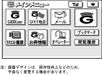
メインメニュー項目一覧
項 目
内 容
Ｇ－ＢＯＯＫ．ｃｏｍ
Ｇ－ＢＯＯＫ．ｃｏｍコンテンツが閲覧・実行できます。
Ｇメモリ地点
Ｇ－ＢＯＯＫ.ｃｏｍで保存した施設を検索・表示できます。
メール
メールの送受信ができます。
リクエスト履歴
リクエスト履歴画面を表示できます。
お得情報
Ｇ－ＢＯＯＫ.ｃｏｍ厳選のお得な情報を表示できます。
オペレーター
携帯電話および通信モジュールの接続で利用が可能な，オペレーターサービス関連のコンテンツを表示できます。
ブックマーク
ブックマークリスト画面を表示できます。
閲覧履歴
閲覧履歴画面を表示できます。
Ｇ-ＢＯＯＫ.com
・
Ｇ－ＢＯＯＫ．ｃｏｍは，ユーザー独自のメニューフォルダーで，あらかじめ設定されている利便性に優れた各コンテンツなどを閲覧・実行できるとともに，Ｇ－ＢＯＯＫの豊富なコンテンツを追加することでカスタマイズし，ユーザー独自のＧ－ＢＯＯＫをつくることができます。
・
Ｇ－ＢＯＯＫ．ｃｏｍ画面は，メインメニュー画面の「Ｇ－ＢＯＯＫ．ｃｏｍ」をタッチすることで表示され，そこで表示した各メニューのタッチスイッチ枠にタッチすることで，各メニューへと移行します。
Ｇ－ＢＯＯＫ.ｃｏｍ項目（◎：携帯電話または通信モジュールどちらか一方の接続で利用可能，●：携帯電話および通信モジュール両方の接続で利用可能）
項 目
内 訳
利用条件
内 容
Ｇメニュー
閲覧・表示機能
◎
ユーザーの目的や趣味にあったメニューを検索・選択できるＧメニュー画面を表示することができます。
道路交通情報
基本コンテンツ
◎
全国の高速道路や一般道路の渋滞情報，主な規制情報をお届けするサービス。現在地周辺の道路交通情報を確認したり，指定地周辺の情報を簡単に検索することができます。
天気予報
基本コンテンツ
◎
全国の天気予報を表示し，音声によって読み上げます。
NHKニュース情報
基本コンテンツ
◎
新聞に目を通す時間のない朝でも，車の中で一般のニュース，スポーツ，トレンド情報などを自動音声読み上げを使ってチェックできる便利なコンテンツです。
リモートメンテナンスサービス
基本コンテンツ
◎
車両の状況に応じて，車検や点検のご案内や販売店のイベントに関する情報をお知らせするサービスです。
キャンペーンコンテンツ
閲覧・表示機能
◎
無料キャンペーン期間中のコンテンツを閲覧し，選択することができます。
おすすめコンテンツ
閲覧・表示機能
◎
Ｇ－ＢＯＯＫがおすすめするコンテンツを閲覧し，選択することができます。
ＡＵＴＯＰＬＡＹ
基本コンテンツ
◎
数あるコンテンツの中からお好みのものを登録しておくことで，コンテンツを開くことなく内容の自動読み上げができます。
オペレーターサポートサービス
オプションコンテンツ（対話型サービス）
●
お客様に代わってオペレーターが情報検索やナビゲーションの目的地設定を代行することができます。
*
ユーザーカスタマイズ
基本コンテンツ
◎
Ｇ－ＢＯＯＫの各設定やメニューの並びなどをお客様の好みにカスタマイズすることができます。
音声コマンドリスト
閲覧・表示機能
◎
音声操作で用いる音声コマンドリストを表示することができます。
参 考
＊
利用できるサービスは，お客様の入力（Eメールのアドレス入力や本文入力など）を伴わない機能に限ります。
参 考
メニュー構成およびそれらの内容は操作性向上のため，予告なく変更する場合があります。
Ｇメニュー
・
Ｇメニューでは，各カテゴリーに分けられた豊富なメニューから，ユーザーの目的や趣味にあったメニューを検索し，実行することができます。また，Ｇメニューで検索したメニューは，Ｇ－ＢＯＯＫ.ｃｏｍに登録することができます。
Ｇメニュー設定項目一覧
カテゴリー
内 容
ライブナビゲーション
日々更新される様々な情報とつながっているので，いつでも最新のスポット情報を入手。そのままナビゲーションの目的地に設定することもできます。
インフォメーション
ニュースやお天気，株価から銀行口座情報まで，今知りたい情報をリアルタイムに検索表示できます。
エンターテイメント ＆ Eコマース
ゲームや占いを車の中で楽しめるサービス。また，電子決済で買い物ができる，ＧＡＺＯＯのショッピングサービスも利用できます。
コミュニケーション
専用のメールアドレスに加え，自宅などのメールアドレスでのメール送受信や掲示板で仲間と情報の交換ができる，様々なコミュニケーションサービスです。
セーフティ ＆ セキュリティ
JAFへの取り次ぎや停めた車両の位置情報確認，保険情報など，様々な時に頼りになるサービスです。
参 考
メニュー構成およびそれらの内容は操作性向上のため，予告なく変更する場合があります。
・
Ｇメニューには，数十種類の豊富なＧ－ＢＯＯＫ.ｃｏｍコンテンツが用意されています。以下に，一例を記します。
Ｇ－ＢＯＯＫ.ｃｏｍコンテンツ一例（◎：携帯電話または通信モジュールどちらか一方の接続で利用可能，○：通信モジュールの接続で利用可能，●：携帯電話および通信モジュール両方の接続で利用可能）
カテゴリー
メニュー名
利用条件
内 容
ライブナビゲーション
近くの店チェック
◎
現在地の近くにあるレストランや喫茶店，ホテルなどを電話番号名称，駅名などで検索できます。調べたいお店のカテゴリーを指定したり目的地に絞った検索も可能です。
マップルイベントガイド
◎
全国計10,000件ものアウトドアスポットやイベントスポットを検索することができます。
G-Walker映画
◎
全国2,500スクリーンの上映スケジュールを網羅し，いつでも観たい映画を検索できます。出演者や監督，ジャンルなど，様々な条件で検索することができます。
インフォメーション
最寄りの情報
◎
車両現在地周辺の情報を提供するサービス。現在の車周辺にあるトヨタ販売店はもちろん，病院など様々な情報を検索することができます。
MYマネー
◎
最先端インターネットサービスにより，銀行，証券会社，カード会社等の金融機関のオンライン口座情報を1つのパスワードで一覧できるサービスです。
速報株価
◎
気になる株の動きも車内でチェック。5分毎に変わる株価の情報を簡単かつスピーディーに確認することができます。
エンターテイメント
がずぺっと
◎
ＧＡＺＯＯ.ｃｏｍのマスコットキャラクター「がずぺっと」の育成シミュレーションゲームを楽しむことができます。
Horoscope星占い
◎
1週間の恋愛運，金銭運，ドライブ運を星座で占うコンテンツ。音声読み上げが可能なので運転中でも運勢を占えます。
パチンコNOW－Ｇ
◎
全国の情報提供加盟ホールからの出玉情報を毎日集計した最強パチンコ・パチスロデータサイトです。
コミュニケーション
伝言板・掲示板
◎
メンバー同士が，ニックネームを使って情報交換したり，自由にコミュニケーションできるＧ－ＢＯＯＫ専用の掲示板サービス。趣味や評判のレストラン，レジャースポットなどの口コミ情報の交換ができます。
Eメールデリバー
◎
自宅のメールアドレスに届いた新着メッセージを，チェックすることができる機能。自宅などで使っているメールアカウントをEメールデリバーに登録しておけば，車内でいつでも新着メールを受信することができます。
フレンドサーチ
○
自分の車の位置を公開したり，仲間の車の位置を検索することができます。車の位置情報は，公開する相手やグループを指定できるので，不特定多数へ公開されることもなく，プライバシーも確保でき，安心なものとしました。
セーフティ ＆ セキュリティ
ネット予約
○
車検，点検，お見積もり等の入庫予約や問い合わせなどの手続きを，オンラインで済ませることができます。販売店から届く各種お知らせや案内に対して返信・予約ができるほか，興味のあるカタログを取り寄せたり，気になることを販売店に問い合わせることもできます。
ロードアシスト24
●
事故や故障などの思わぬトラブル時に，24時間いつでも救援車両手配のロードサービスが受けられるサービス。車両の位置情報をロードアシスト24デスクが把握し，土地勘のない場所でのトラブル時にも迅速に対応できます。
ここだよメモリー（マイカーサーチ）
○
マイカーの位置情報をＧ－ＢＯＯＫセンターに登録しておけば携帯電話やパソコンなど，インターネットにつながった端末から位置を確認できます。
*1
どこだよマイカー（マイカーサーチ）
○
お知らせメールを設定すれば，エンジンが始動中（ACC ON）であることを約10分間隔でメールにて通知。また，位置情報履歴を設定すれば設定してからの位置情報をＧ－ＢＯＯＫセンターに約10分間隔で登録し，位置履歴をパソコンや携帯電話などから見ることができます。
*1
*2
Eコマース
ＧＡＺＯＯショッピング
◎
ショッピングモールにアクセスすれば，本やCDからＧ－ＢＯＯＫ関連商品まで，いろいろな商品を手軽にネットショッピングできます。
参 考
＊1
位置情報は誤差があります。またGPS，通信モジュールの電波状態により利用できない場合があります。
＊2
エンジン停止（ACC OFF）状態で車が移動された場合，移動中および移動後の位置情報は，検知できません。
参 考
ここに記した項目は，Ｇ－ＢＯＯＫ.ｃｏｍコンテンツのほんの一例です。また，各コンテンツは順次，追加や変更が施されます。
Ｇメモリ地点
・
Ｇ－ＢＯＯＫ．ｃｏｍで保存した施設などをリスト表示することができます。
・
登録したＧメモリ地点は，ナビゲーションモードのメモリ地点から呼び出して，目的地として設定することもできます。
メール
・
Ｇ－ＢＯＯＫ利用契約により無料で取得することのできるメールアドレス（Ｇメール）および自宅・会社などのメール（Eメールデリバー）の送受信ができます。
■注 意■
ご登録中のインターネットサービスプロバイダーの状況により，メールを取得できない場合があります。
リクエスト履歴
・
Myリクエスト・新着メール・新着情報などにより受信したＧ－ＢＯＯＫ情報のタイトルをリスト表示することができます。
・
履歴は，最大18件まで，保存容量は18件で150KBまで可能です。
お得情報
・
ガソリンスタンドなどロードサイド店舗などのお得な情報（広告）を，Ｇ－ＢＯＯＫセンターから入手することができます。
Myリクエスト
・
よく利用する機能を各コンテンツからピックアップして登録しておくことで，走行中でも簡単操作でリクエスト可能なコンテンツのリスト画面を表示することができます。
・
Myリクエストからリクエストしたコンテンツは，ナビゲーションの現在地表示中でも内容を音声で読み上げます。